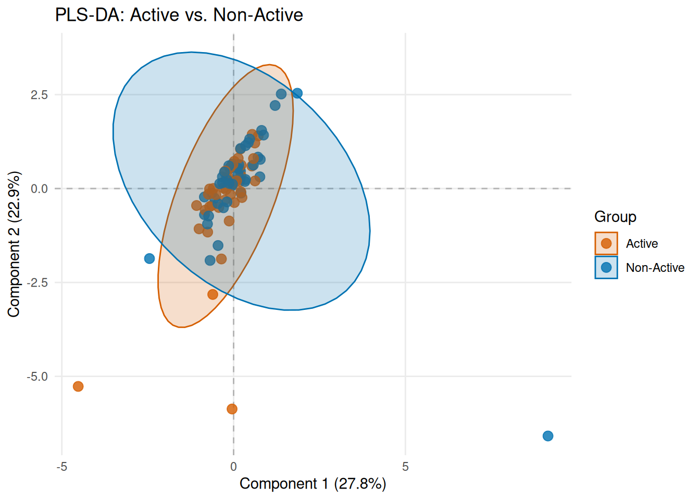
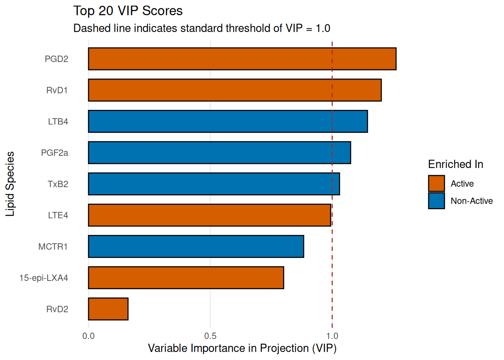
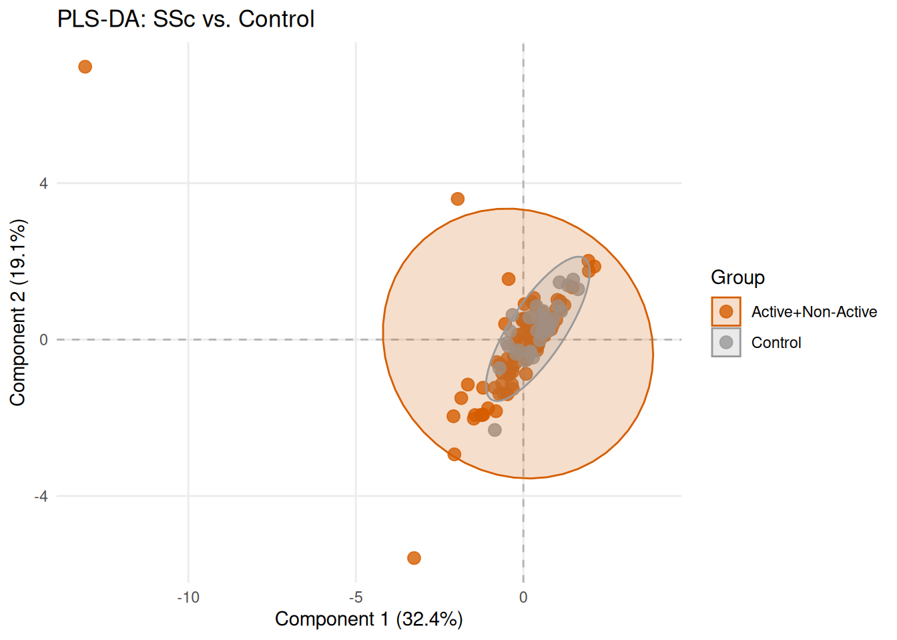
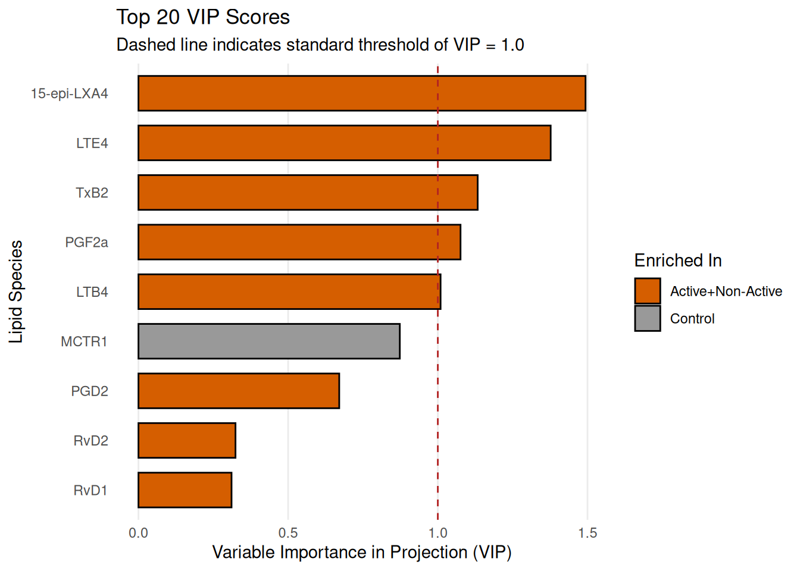

Last updated: 2026-08-06
Checks: 7 0
Knit directory: SSc-USZ/
This reproducible R Markdown analysis was created with workflowr (version 1.7.2). The Checks tab describes the reproducibility checks that were applied when the results were created. The Past versions tab lists the development history.
Great! Since the R Markdown file has been committed to the Git repository, you know the exact version of the code that produced these results.
Great job! The global environment was empty. Objects defined in the global environment can affect the analysis in your R Markdown file in unknown ways. For reproduciblity it’s best to always run the code in an empty environment.
The command set.seed(20260331) was run prior to running
the code in the R Markdown file. Setting a seed ensures that any results
that rely on randomness, e.g. subsampling or permutations, are
reproducible.
Great job! Recording the operating system, R version, and package versions is critical for reproducibility.
Nice! There were no cached chunks for this analysis, so you can be confident that you successfully produced the results during this run.
Great job! Using relative paths to the files within your workflowr project makes it easier to run your code on other machines.
Great! You are using Git for version control. Tracking code development and connecting the code version to the results is critical for reproducibility.
The results in this page were generated with repository version 6f742b5. See the Past versions tab to see a history of the changes made to the R Markdown and HTML files.
Note that you need to be careful to ensure that all relevant files for
the analysis have been committed to Git prior to generating the results
(you can use wflow_publish or
wflow_git_commit). workflowr only checks the R Markdown
file, but you know if there are other scripts or data files that it
depends on. Below is the status of the Git repository when the results
were generated:
Ignored files:
Ignored: .Rhistory
Ignored: .Rproj.user/
Ignored: output/01a_data_import_and_qc/
Ignored: output/01a_data_import_and_qc_lod_filtered/
Ignored: output/01b_clinical_feature_engineering/
Ignored: output/02a_cohort_characterization/
Ignored: output/02b_clinical_clustering/
Ignored: output/03a_proteomics_variance/
Ignored: output/03b_proteomics_differential/
Ignored: output/03b_proteomics_differential_lod_filtered/
Ignored: output/03c_proteomics_clustering/
Ignored: output/03c_proteomics_clustering_lod_filtered/
Ignored: output/03d_proteomics_subgroups/
Ignored: output/03e_proteomics_correlations/
Ignored: output/04a_lipidomics_topography/
Ignored: output/04b_lipidomics_differential/
Ignored: output/04d_lipidomics_plsda/
Ignored: output/05_machine_learning/
Ignored: output/05a_qc_and_preprocessing/
Ignored: output/06a_investigator/
Ignored: output/manual_html_saves/
Ignored: output/nonact_extraction/
Ignored: output/z01_sideproject_ellen/
Ignored: output/z02_sideproject_vascular_2/
Ignored: renv/library/
Ignored: renv/staging/
Unstaged changes:
Modified: renv.lock
Note that any generated files, e.g. HTML, png, CSS, etc., are not included in this status report because it is ok for generated content to have uncommitted changes.
These are the previous versions of the repository in which changes were
made to the R Markdown (analysis/04d_lipidomics_plsda.Rmd)
and HTML (docs/04d_lipidomics_plsda.html) files. If you’ve
configured a remote Git repository (see ?wflow_git_remote),
click on the hyperlinks in the table below to view the files as they
were in that past version.
| File | Version | Author | Date | Message |
|---|---|---|---|---|
| Rmd | df2107d | alexander-gysin | 2026-08-06 | wflow_git_commit(all = TRUE) |
| Rmd | 71552dd | alexander-gysin | 2026-08-06 | added plsda script and engines, currently fails to converge for both ssc vs ctrl and active vs nonactive |
library(tidyverse)
library(patchwork)
library(here)
library(ropls) # Core PLS-DA engine
library(kableExtra) # HTML tables
# Knitr Config
knitr::opts_chunk$set(warning = FALSE, message = FALSE)
# Output paths
current_file <- "04d_lipidomics_plsda"
output_dir_data <- here::here("output", current_file)
if (!dir.exists(output_dir_data)) dir.create(output_dir_data, recursive = TRUE)
# Asset paths (Public/GitHub accessible)
assets_dir <- here::here("docs", "assets", current_file)
if (!dir.exists(assets_dir)) dir.create(assets_dir, recursive = TRUE)
# Source Configuration & Engines
source(here::here("code", "03_lipidomics_engines.R"))
# Load Pre-Cleaned Data
master_spine <- readRDS(here::here("output", "01b_clinical_feature_engineering", "curated_clinical_spine.rds"))
lipid_mat <- readRDS(here::here("output", "01a_data_import_and_qc", "raw_lipid_matrix.rds"))
# Dynamic Feature Count
total_features <- nrow(lipid_mat)# 1. Sparsity Triage Configs ---------------------------
# PLS-DA requires stricter missingness thresholds than standard DEA
sparsity_configs <- list(
global_triage = list(
min_detect_rate = 0.25 # Must be measured in at least 25% of the cohort
)
)
# 2. PLS-DA Routing Configs ---------------------------
plsda_configs <- list(
job_active_vs_nonactive = list(
title = "Active vs. Non-Active",
test_var = "cohort_group",
target_groups = c("Active"),
ref_groups = c("Non-Active"),
bin_continuous = FALSE,
vip_top_n = 20
),
job_ssc_vs_ctrl = list(
title = "SSc vs. Control",
test_var = "cohort_group",
target_groups = c("Active", "Non-Active"),
ref_groups = c("Control"),
bin_continuous = FALSE,
vip_top_n = 20
)
)# 1. Triage Math ---------------------------
conf <- sparsity_configs$global_triage
binary_mat <- ifelse(is.na(lipid_mat) | lipid_mat == 0, 0, 1)
detection_rates <- rowMeans(binary_mat, na.rm = TRUE)
testable_lipids <- names(detection_rates[detection_rates >= conf$min_detect_rate])
removed_lipids <- names(detection_rates[detection_rates < conf$min_detect_rate])
mat_triage <- lipid_mat[testable_lipids, , drop = FALSE]
# 2. Imputation Engine ---------------------------
imputation_res <- worker_impute_min_fifth(mat_triage)
mat_imputed <- imputation_res$mat
cat(c(sprintf("### Triage & Imputation Audit {.unlisted .unnumbered}\n\n"),
sprintf("* **Starting Lipids:** %d\n", nrow(lipid_mat)),
sprintf("* **Removed by Triage (Failed %.0f%% threshold):** %d\n", conf$min_detect_rate * 100, length(removed_lipids)),
sprintf("* **Surviving Lipids:** %d\n", nrow(mat_triage)),
sprintf("* **Data Points Imputed:** %d (Using 1/5th MNAR minimum rule)\n\n", imputation_res$imputed_count)))# Save Imputed Matrix for downstream use
saveRDS(mat_imputed, file.path(output_dir_data, "imputed_lipid_matrix.rds"))
# Cleanup ---------------------------
rm(binary_mat, detection_rates, conf, mat_triage, imputation_res, removed_lipids)
invisible(gc())# Global storage for VIP lists
vip_results_list <- list()
for (job_id in names(plsda_configs)) {
job <- plsda_configs[[job_id]]
cat(sprintf("\n\n## %s\n\n", job$title))
# Continuous variable handling (binning for classification model)
temp_spine <- master_spine %>% filter(!is.na(.data[[job$test_var]]))
if (isTRUE(job$bin_continuous)) {
median_val <- median(temp_spine[[job$test_var]], na.rm = TRUE)
temp_spine <- temp_spine %>% mutate(!!job$test_var := ifelse(.data[[job$test_var]] > median_val, "High", "Low"))
cat(sprintf("*Note: Continuous variable %s was binned at median (%.2f) to permit classification modeling.*\n\n", job$test_var, median_val))
}
# Execute Wrapper
res <- wrap_plsda_pipeline(
mat = mat_imputed,
clin_df = temp_spine,
config = job,
job_name = job_id,
out_dir = output_dir_data,
assets_dir = assets_dir,
project_colors_func = get_project_colors
)
# Print the Data Wrangling Audit Trail
if (!is.null(res$audit)) {
cat(c(sprintf("### Data Wrangling Audit {.unlisted .unnumbered}\n\n"),
sprintf("* **Starting cohort:** %d samples\n", res$audit$start_samples),
sprintf("* **Filtered to target groups:** %d samples\n", res$audit$filtered_samples),
sprintf("* **Dropped due to missing clinical labels:** %d samples\n", res$audit$dropped_na_labels),
sprintf("* **Variance Check:** %d lipids had zero variance in this specific subset and were excluded.\n", res$audit$zero_var_dropped),
sprintf("* **Final input to PLS-DA:** %d samples x %d lipids\n\n", res$audit$final_samples, res$audit$final_lipids)))
}
if (res$status == "success") {
vip_results_list[[job_id]] <- res$tables$vip
saveRDS(res$tables$vip, file.path(output_dir_data, sprintf("%s_vip_stats.rds", job_id)))
# Render Plots Individually
cat(sprintf("### PLS-DA Scores: %s {.unlisted .unnumbered}\n\n", job$title))
if (interactive() && !isTRUE(getOption('knitr.in.progress'))) {
print(res$plots$scores); cat("\n\n")
} else {
print(res$plots$scores)
cat("\n\n")
}
cat(sprintf("### VIP Biomarkers Plot: %s {.unlisted .unnumbered}\n\n", job$title))
if (interactive() && !isTRUE(getOption('knitr.in.progress'))) {
print(res$plots$vip); cat("\n\n")
} else {
print(res$plots$vip)
cat("\n\n")
}
# Render Table
cat(sprintf("### Top VIP Biomarkers Table {.unlisted .unnumbered}\n\n"))
tbl <- head(res$tables$vip, 15) %>%
mutate(VIP = round(VIP, 3)) %>%
kableExtra::kbl(format = "html", caption = sprintf("Top 15 VIP Features: %s", job$title)) %>%
kableExtra::kable_styling(bootstrap_options = c("striped", "hover", "condensed"), full_width = FALSE)
print(tbl)
cat("\n\n")
# Safely clear the plotting objects now that they are inside the success loop
rm(tbl)
} else {
cat(sprintf("**FAILED:** %s\n\n", res$error_msg))
}
rm(temp_spine, res)
}
## Active vs. Non-Active### Data Wrangling Audit {.unlisted .unnumbered}
* **Starting cohort:** 131 samples
* **Filtered to target groups:** 95 samples
* **Dropped due to missing clinical labels:** 0 samples
* **Variance Check:** 0 lipids had zero variance in this specific subset and were excluded.
* **Final input to PLS-DA:** 95 samples x 9 lipids
### PLS-DA Scores: Active vs. Non-Active {.unlisted .unnumbered}
### VIP Biomarkers Plot: Active vs. Non-Active {.unlisted .unnumbered}
### Top VIP Biomarkers Table {.unlisted .unnumbered}
<table class="table table-striped table-hover table-condensed" style="width: auto !important; margin-left: auto; margin-right: auto;">
<caption>Top 15 VIP Features: Active vs. Non-Active</caption>
<thead>
<tr>
<th style="text-align:left;"> </th>
<th style="text-align:left;"> Lipid </th>
<th style="text-align:right;"> VIP </th>
<th style="text-align:left;"> Enriched_In </th>
</tr>
</thead>
<tbody>
<tr>
<td style="text-align:left;"> PGD2 </td>
<td style="text-align:left;"> PGD2 </td>
<td style="text-align:right;"> 1.262 </td>
<td style="text-align:left;"> Active </td>
</tr>
<tr>
<td style="text-align:left;"> RvD1 </td>
<td style="text-align:left;"> RvD1 </td>
<td style="text-align:right;"> 1.201 </td>
<td style="text-align:left;"> Active </td>
</tr>
<tr>
<td style="text-align:left;"> LTB4 </td>
<td style="text-align:left;"> LTB4 </td>
<td style="text-align:right;"> 1.145 </td>
<td style="text-align:left;"> Non-Active </td>
</tr>
<tr>
<td style="text-align:left;"> PGF2a </td>
<td style="text-align:left;"> PGF2a </td>
<td style="text-align:right;"> 1.076 </td>
<td style="text-align:left;"> Non-Active </td>
</tr>
<tr>
<td style="text-align:left;"> TxB2 </td>
<td style="text-align:left;"> TxB2 </td>
<td style="text-align:right;"> 1.030 </td>
<td style="text-align:left;"> Non-Active </td>
</tr>
<tr>
<td style="text-align:left;"> LTE4 </td>
<td style="text-align:left;"> LTE4 </td>
<td style="text-align:right;"> 0.994 </td>
<td style="text-align:left;"> Active </td>
</tr>
<tr>
<td style="text-align:left;"> MCTR1 </td>
<td style="text-align:left;"> MCTR1 </td>
<td style="text-align:right;"> 0.883 </td>
<td style="text-align:left;"> Non-Active </td>
</tr>
<tr>
<td style="text-align:left;"> 15-epi-LXA4 </td>
<td style="text-align:left;"> 15-epi-LXA4 </td>
<td style="text-align:right;"> 0.801 </td>
<td style="text-align:left;"> Active </td>
</tr>
<tr>
<td style="text-align:left;"> RvD2 </td>
<td style="text-align:left;"> RvD2 </td>
<td style="text-align:right;"> 0.162 </td>
<td style="text-align:left;"> Active </td>
</tr>
</tbody>
</table>
## SSc vs. Control
### Data Wrangling Audit {.unlisted .unnumbered}
* **Starting cohort:** 131 samples
* **Filtered to target groups:** 130 samples
* **Dropped due to missing clinical labels:** 0 samples
* **Variance Check:** 0 lipids had zero variance in this specific subset and were excluded.
* **Final input to PLS-DA:** 130 samples x 9 lipids
### PLS-DA Scores: SSc vs. Control {.unlisted .unnumbered}
### VIP Biomarkers Plot: SSc vs. Control {.unlisted .unnumbered}
### Top VIP Biomarkers Table {.unlisted .unnumbered}
<table class="table table-striped table-hover table-condensed" style="width: auto !important; margin-left: auto; margin-right: auto;">
<caption>Top 15 VIP Features: SSc vs. Control</caption>
<thead>
<tr>
<th style="text-align:left;"> </th>
<th style="text-align:left;"> Lipid </th>
<th style="text-align:right;"> VIP </th>
<th style="text-align:left;"> Enriched_In </th>
</tr>
</thead>
<tbody>
<tr>
<td style="text-align:left;"> 15-epi-LXA4 </td>
<td style="text-align:left;"> 15-epi-LXA4 </td>
<td style="text-align:right;"> 1.493 </td>
<td style="text-align:left;"> Active+Non-Active </td>
</tr>
<tr>
<td style="text-align:left;"> LTE4 </td>
<td style="text-align:left;"> LTE4 </td>
<td style="text-align:right;"> 1.377 </td>
<td style="text-align:left;"> Active+Non-Active </td>
</tr>
<tr>
<td style="text-align:left;"> TxB2 </td>
<td style="text-align:left;"> TxB2 </td>
<td style="text-align:right;"> 1.133 </td>
<td style="text-align:left;"> Active+Non-Active </td>
</tr>
<tr>
<td style="text-align:left;"> PGF2a </td>
<td style="text-align:left;"> PGF2a </td>
<td style="text-align:right;"> 1.076 </td>
<td style="text-align:left;"> Active+Non-Active </td>
</tr>
<tr>
<td style="text-align:left;"> LTB4 </td>
<td style="text-align:left;"> LTB4 </td>
<td style="text-align:right;"> 1.009 </td>
<td style="text-align:left;"> Active+Non-Active </td>
</tr>
<tr>
<td style="text-align:left;"> MCTR1 </td>
<td style="text-align:left;"> MCTR1 </td>
<td style="text-align:right;"> 0.873 </td>
<td style="text-align:left;"> Control </td>
</tr>
<tr>
<td style="text-align:left;"> PGD2 </td>
<td style="text-align:left;"> PGD2 </td>
<td style="text-align:right;"> 0.671 </td>
<td style="text-align:left;"> Active+Non-Active </td>
</tr>
<tr>
<td style="text-align:left;"> RvD2 </td>
<td style="text-align:left;"> RvD2 </td>
<td style="text-align:right;"> 0.324 </td>
<td style="text-align:left;"> Active+Non-Active </td>
</tr>
<tr>
<td style="text-align:left;"> RvD1 </td>
<td style="text-align:left;"> RvD1 </td>
<td style="text-align:right;"> 0.311 </td>
<td style="text-align:left;"> Active+Non-Active </td>
</tr>
</tbody>
</table># 00_lipid_engines.R
# Purpose: Custom analytical engines for highly sparse mass spectrometry lipidomics.
# Architecture: WRAPPERS (orchestration/routing) at the top, WORKERS (math/plots) at the bottom.
library(tidyverse)
library(ggplot2)
library(patchwork)
library(ComplexHeatmap)
library(ggrepel)
library(scales)
library(circlize)
# PART 1: WRAPPERS -------------------------------------------------------------
# Wrapper: Missingness Topography
#' Coordinates the calculation of global missingness and generates diagnostic plots.
#' @param lipid_mat A numeric matrix of unimputed lipidomics (Lipids as rows, Patients as columns).
#' @param config List of visualization parameters.
#' @param output_dir Path to the output directory to export PNGs.
#' @param lod_df Data frame containing the aggregated mean LOD values per lipid.
wrap_missingness_topography <- function(lipid_mat, config, output_dir, lod_df) {
# 1. Calculate missingness stats
missing_stats <- worker_calc_missingness(lipid_mat)
# 2. Generate Plots
p_bars <- worker_plot_missingness_bars(missing_stats$df)
p_heatmap <- worker_plot_comissingness_heatmap(lipid_mat, missing_stats$df)
p_lod <- worker_plot_lod_scatter(lipid_mat, missing_stats$df, lod_df)
# 3. Dynamic Export
ggplot2::ggsave(
filename = file.path(output_dir, "topography_missingness_bars.png"),
plot = p_bars,
width = config$export$width,
height = config$export$height,
dpi = config$export$dpi,
bg = "white"
)
ggplot2::ggsave(
filename = file.path(output_dir, "topography_lod_scatter.png"),
plot = p_lod,
width = config$export$width,
height = config$export$height,
dpi = config$export$dpi,
bg = "white"
)
# 4. Compile output
return(list(
diagnostics = list(total_lipids = nrow(missing_stats$df)),
data = list(missing_stats = missing_stats$df),
plots = list(
missingness_bars = p_bars,
co_missingness_heatmap = p_heatmap,
lod_scatter = p_lod
)
))
}
# Wrapper: Distribution Signatures
#' Coordinates extraction of strictly measured values and plots histograms with LOD lines.
#' @param lipid_mat A numeric matrix of unimputed lipidomics.
#' @param config List of visualization parameters.
#' @param output_dir Path to the output directory to export PNGs.
#' @param project_colors_func Optional function to fetch project-specific colors.
#' @param lod_df Data frame containing the aggregated mean LOD values per lipid.
wrap_distribution_signatures <- function(lipid_mat, config, output_dir, project_colors_func = NULL, lod_df) {
# Generate Plot
p_hists <- worker_plot_histograms(lipid_mat, config, project_colors_func, lod_df)
# Dynamic Export
ggplot2::ggsave(
filename = file.path(output_dir, "topography_distribution_signatures.png"),
plot = p_hists,
width = 12,
height = 8,
dpi = config$export$dpi,
bg = "white"
)
return(list(
plots = list(hists = p_hists)
))
}
# Wrapper: Phenotype Completeness
#' Evaluates completeness against clinical variables using dynamic dictionary routing.
#' @param lipid_mat A numeric matrix of unimputed lipidomics.
#' @param clin_df Clinical spine data frame containing subjects.
#' @param clin_dict Clinical data dictionary for variable class lookup.
#' @param config List of visualization parameters.
#' @param output_dir Path to the output directory to export PNGs.
wrap_phenotype_completeness <- function(lipid_mat, clin_df, clin_dict, config, output_dir) {
# Ensure clean subfolder for phenotypic maps
pheno_out_dir <- file.path(output_dir, "phenotype_completeness")
if (!dir.exists(pheno_out_dir)) dir.create(pheno_out_dir, recursive = TRUE)
# Generate Plots
p_pheno_list <- worker_plot_phenotype_completeness(
mat = lipid_mat,
clin_df = clin_df,
clin_dict = clin_dict,
config = config,
out_dir = pheno_out_dir
)
return(list(
plots = p_pheno_list
))
}
# PART 2: WORKERS (Data Processing & Visualization)----------------------------
# Worker: Calculate Missingness
#' Safely handles both NA and 0 as missing values on row-wise matrix inputs.
worker_calc_missingness <- function(mat) {
# Apply across rows (Lipids)
missing_pct <- apply(mat, 1, function(x) sum(is.na(x) | x == 0) / length(x))
df <- data.frame(
Lipid = names(missing_pct),
Missingness = missing_pct,
row.names = NULL
) %>%
dplyr::distinct(Lipid, .keep_all = TRUE) %>%
dplyr::arrange(dplyr::desc(Missingness))
return(list(df = df))
}
# Worker: Plot Missingness Bars
#' Visualizes ranked missingness, coloring 100% missing values uniquely.
worker_plot_missingness_bars <- function(missing_df) {
missing_df$Lipid <- factor(missing_df$Lipid, levels = missing_df$Lipid)
missing_df$is_100 <- missing_df$Missingness == 1
p <- ggplot2::ggplot(missing_df, ggplot2::aes(x = Lipid, y = Missingness, fill = is_100)) +
ggplot2::geom_bar(stat = "identity", color = "black", alpha = 0.8) +
ggplot2::scale_fill_manual(values = c("FALSE" = "coral", "TRUE" = "firebrick")) +
ggplot2::scale_y_continuous(
breaks = seq(0, 1, by = 0.05),
labels = scales::percent_format(accuracy = 1)
) +
ggplot2::theme_minimal() +
ggplot2::theme(
axis.text.x = ggplot2::element_text(angle = 45, hjust = 1, vjust = 1, size = 6),
panel.grid.major.x = ggplot2::element_blank(),
panel.grid.minor.y = ggplot2::element_blank(),
panel.grid.major.y = ggplot2::element_line(color = "gray80", linewidth = 0.5),
legend.position = "none"
) +
ggplot2::labs(
x = "Lipid Species",
y = "Missingness (%)",
title = "Ranked Missingness per Lipid"
)
return(p)
}
# Worker: Plot Co-Missingness Heatmap
#' Uses ComplexHeatmap to map paired missingness combinations with hierarchical clustering.
worker_plot_comissingness_heatmap <- function(mat, missing_df) {
binary_mat <- ifelse(is.na(mat) | mat == 0, 1, 0)
co_mat <- binary_mat %*% t(binary_mat)
co_mat_pct <- (co_mat / ncol(mat)) * 100
missing_ordered <- missing_df$Missingness[match(rownames(mat), missing_df$Lipid)] * 100
ha <- ComplexHeatmap::HeatmapAnnotation(
Missingness = ComplexHeatmap::anno_barplot(
missing_ordered,
gp = grid::gpar(fill = "gray50", col = "black"),
height = grid::unit(2, "cm")
),
annotation_name_side = "left"
)
# Inverted color scale: Blue for 100% (high co-missingness), Red for 0% (low)
col_fun <- circlize::colorRamp2(c(min(co_mat_pct), 100), c("firebrick", "navy"))
p <- ComplexHeatmap::Heatmap(
co_mat_pct,
name = "Co-Missingness\n(% Samples)",
col = col_fun,
top_annotation = ha,
cluster_rows = TRUE,
cluster_columns = TRUE,
show_row_names = FALSE,
show_column_names = TRUE,
column_names_rot = 45,
column_names_side = "bottom",
column_names_gp = grid::gpar(fontsize = 6),
show_column_dend = FALSE,
row_dend_width = grid::unit(4, "cm"),
row_title = "Clustered Lipids",
column_title = "Clustered Lipids"
)
return(p)
}
# Worker: Limit of Detection (LOD) Scatter
#' Maps LOD fold changes including underlying raw point jittering and mean metrics.
worker_plot_lod_scatter <- function(mat, missing_df, lod_df) {
lod_vec <- setNames(lod_df$LOD_Matrix, lod_df$Mediator)
mean_lod_distance <- sapply(rownames(mat), function(lipid) {
x <- mat[lipid, ]
measured <- x[!is.na(x) & x > 0]
lod <- lod_vec[lipid]
if(length(measured) > 0 && !is.na(lod)) {
mean(log2(measured / lod))
} else {
NA_real_
}
})
plot_long <- as.data.table(mat, keep.rownames = "Lipid")
plot_long <- melt(
plot_long,
id.vars = "Lipid",
variable.name = "Sample",
value.name = "Abundance"
)
plot_long[, LOD := lod_vec[Lipid]]
plot_long <- plot_long[
!is.na(Abundance) &
!is.na(LOD) &
Abundance > 0
]
plot_long[, Log2FC_LOD := log2(Abundance / LOD)]
plot_long <- merge(
plot_long,
missing_df,
by = "Lipid",
all.x = TRUE
)
int_df <- data.frame(Lipid = names(mean_lod_distance), Mean_LOD_FC = mean_lod_distance)
plot_df <- dplyr::left_join(missing_df, int_df, by = "Lipid")
# Identify top 5 lipids by Mean LOD FC to label
label_df <- plot_df |>
dplyr::filter(!is.na(Mean_LOD_FC)) |>
dplyr::slice_max(Mean_LOD_FC, n = 5)
summary_df <- plot_long[
,
.(
min_fc = min(Log2FC_LOD),
max_fc = max(Log2FC_LOD),
mean_fc = mean(Log2FC_LOD)
),
by = .(Lipid, Missingness)
]
# Multi-layer plot setup using strict local aesthetics to avoid inheritance crashes
plot <- ggplot2::ggplot() +
# Layer 1: Raw individual measurements
ggplot2::geom_jitter(
data = plot_long,
ggplot2::aes(x = Log2FC_LOD, y = Missingness),
colour = "grey70",
alpha = 0.3,
size = 1.2,
height = 0.01
) +
# Layer 2: Min-Max segments
ggplot2::geom_segment(
data = summary_df,
ggplot2::aes(x = min_fc, xend = max_fc, y = Missingness, yend = Missingness),
alpha = 0.4,
colour = "grey50"
) +
# Layer 3: Means
ggplot2::geom_point(
data = summary_df,
ggplot2::aes(x = mean_fc, y = Missingness),
colour = "navy",
size = 2
) +
ggplot2::scale_y_continuous(
labels = scales::percent_format()
) +
ggplot2::theme_minimal() +
ggplot2::labs(
title = "Limit of Detection (LOD) Topography",
x = "LOD Foldchange (log2) of Successfully Measured Samples",
y = "Missingness (%)"
) +
# Layer 4: Explicitly mapped text labels
ggrepel::geom_text_repel(
data = label_df,
ggplot2::aes(x = Mean_LOD_FC, y = Missingness, label = Lipid),
size = 3.5,
max.overlaps = Inf,
box.padding = 0.5,
point.padding = 0.3
)
return(plot)
}
# Worker: Plot Histograms
#' Plots raw or log2 facet-wrapped histograms including dashed red LOD reference thresholds.
worker_plot_histograms <- function(mat, config, project_colors_func, lod_df) {
fill_color <- if(!is.null(project_colors_func)) project_colors_func("primary") else "steelblue"
df_long <- as.data.frame(t(mat)) %>%
tibble::rownames_to_column("SampleID") %>%
tidyr::pivot_longer(-SampleID, names_to = "Lipid", values_to = "Intensity") %>%
dplyr::filter(!is.na(Intensity) & Intensity > 0)
# Map LOD values
lod_vec <- setNames(lod_df$LOD_Matrix, lod_df$Mediator)
df_long$LOD <- lod_vec[df_long$Lipid]
# Log transformation handling (applied to intensity and reference thresholds)
x_label <- "Intensity (Raw)"
if(isTRUE(config$missingness$log_transform_viz)) {
df_long$Intensity <- log2(df_long$Intensity)
df_long$LOD <- log2(df_long$LOD)
x_label <- "Log2(Intensity)"
}
lod_lines <- df_long %>%
dplyr::distinct(Lipid, LOD) %>%
dplyr::filter(!is.na(LOD))
# Histograms plot (including n=1 metrics natively)
p <- ggplot2::ggplot(df_long) +
ggplot2::geom_histogram(
aes(x = Intensity),
bins = config$missingness$hist_bins,
fill = fill_color,
color = "black",
alpha = 0.7
) +
ggplot2::geom_vline(
data = lod_lines,
aes(xintercept = LOD),
color = "firebrick",
linetype = "dashed",
linewidth = 0.8
) +
ggplot2::theme_minimal() +
ggplot2::theme(
strip.text = ggplot2::element_text(size = 7, face = "bold"),
panel.grid.minor = ggplot2::element_blank()
) +
ggplot2::labs(x = x_label, y = "Count") +
ggplot2::facet_wrap(~Lipid, scales = "free", ncol = 5)
return(p)
}
# Worker: Plot Phenotype Completeness
#' Renders stacked completeness bar charts normalized by overall cohort size.
worker_plot_phenotype_completeness <- function(mat, clin_df, clin_dict, config, out_dir) {
plots <- list()
df_long <- as.data.frame(t(mat)) %>%
tibble::rownames_to_column("Subject_ID") %>%
tidyr::pivot_longer(-Subject_ID, names_to = "Lipid", values_to = "Intensity") %>%
dplyr::mutate(is_missing = ifelse(is.na(Intensity) | Intensity == 0, 1, 0))
df_join <- df_long %>% dplyr::left_join(clin_df, by = "Subject_ID")
for(v_name in config$phenotype$vars_to_test) {
if(!v_name %in% colnames(df_join)) next
# 1. Dynamic Dictionary Lookup
var_class <- clin_dict %>% dplyr::filter(Variable == v_name) %>% dplyr::pull(Class) %>% tolower()
if(length(var_class) == 0) var_class <- "unknown"
plot_col <- v_name
# 2. Dynamic Continuous Binning
if(var_class %in% c("numeric", "integer", "double", "continuous")) {
binned_col_name <- paste0(v_name, "_binned")
n_bins <- config$phenotype$continuous_bins
df_join <- df_join %>%
dplyr::mutate(
!!binned_col_name := dplyr::ntile(!!rlang::sym(v_name), n_bins),
# Prevent paste0() from coercing real NA values into the string "Quantile NA"
!!binned_col_name := dplyr::if_else(
is.na(!!rlang::sym(binned_col_name)),
NA_character_,
paste0("Quantile ", !!rlang::sym(binned_col_name))
)
)
plot_col <- binned_col_name
}
# 3. Calculate and Plot
# Filter out actual NA clinical entries
df_valid <- df_join %>%
dplyr::filter(!is.na(!!rlang::sym(plot_col)) & !!rlang::sym(plot_col) != "Quantile NA")
# Track true cohort denominator to keep stacked heights <= 100%
total_subjects <- length(unique(df_valid$Subject_ID))
summary_df <- df_valid %>%
dplyr::group_by(Lipid, !!rlang::sym(plot_col)) %>%
dplyr::summarise(
measured_count = sum(is_missing == 0),
# Calculate contribution to cohort total
comp_contrib = measured_count / total_subjects,
.groups = "drop"
)
p <- ggplot2::ggplot(summary_df, ggplot2::aes(x = Lipid, y = comp_contrib, fill = as.factor(!!rlang::sym(plot_col)))) +
ggplot2::geom_bar(stat = "identity", position = "stack", width = 0.7) +
ggplot2::scale_y_continuous(labels = scales::percent_format(accuracy = 1)) +
ggplot2::theme_minimal() +
ggplot2::theme(
axis.text.x = ggplot2::element_text(angle = 45, hjust = 1, size = 10),
legend.position = "top",
legend.title = ggplot2::element_blank()
) +
ggplot2::labs(
title = paste("Completeness Partitioned by", v_name),
y = "Completeness (%)",
x = "Lipid Species"
)
# 4. Dynamic Export
file_name <- file.path(out_dir, paste0("pheno_completeness_", v_name, ".png"))
ggplot2::ggsave(
filename = file_name,
plot = p,
width = config$export$width,
height = config$export$height,
dpi = config$export$dpi,
bg = "white"
)
plots[[v_name]] <- p
}
return(plots)
}
# PART 3: WORKERS (Statistical Engines - Stubs)----------------------------------
worker_run_fishers_exact <- function(...) {
# TODO: Implement 2x2 contingency table math for binarized pipeline
}
worker_run_firth_logistic <- function(...) {
# TODO: Implement logistf::logistf() for penalized logistic modeling
}
worker_run_tobit_model <- function(...) {
# TODO: Implement survival::survreg() or AER::tobit() for left-censoring modeling
}
worker_run_hurdle_model <- function(...) {
# TODO: Implement pscl::hurdle() modeling
}
worker_aggregate_lipid_classes <- function(...) {
# TODO: Implement aggregation mapping to reconstruct functional pools
}
# SCRIPT: 00_lipid_engines.R
# PURPOSE: Master statistical engines and visualization wrappers for sparse lipidomics.
# ARCHITECTURE:
# - Parts 1 & 2: Differential Expression (Binarized Hurdle 1 - Fisher/Firth)
# - Parts 3 & 4: Raw Abundances (Continuous Hurdle 2 - Mann-Whitney/Spearman)
# - Parts 5 & 6: Lipid Set Enrichment Analysis (LSEA Binary Burden Math)
library(dplyr)
library(ggplot2)
library(patchwork)
library(ComplexHeatmap)
# library(logistf) # Required for Firth's Penalized Regression
# PART 4: CORE STATISTICAL WORKERS (DEA)-----------------------------------
#' Worker: Fisher's Exact Test (Categorical)
worker_fisher_exact <- function(v_valid, g_valid, target_name, ref_name) {
# Build 2x2 table: rows = Group, cols = Detection (0, 1)
tab <- table(factor(g_valid, levels = c(ref_name, target_name)),
factor(v_valid, levels = c(0, 1)))
if (all(dim(tab) == c(2, 2))) {
res <- suppressWarnings(fisher.test(tab))
return(list(p_val = res$p.value, estimate = res$estimate[[1]])) # Odds Ratio
} else {
return(list(p_val = NA_real_, estimate = NA_real_))
}
}
#' Worker: Firth's Penalized Logistic Regression (Continuous)
worker_firth_regression <- function(v_valid, clin_vec_cont) {
df <- data.frame(Detected = v_valid, Predictor = clin_vec_cont)
# Uses logistf to handle complete separation in sparse omics
fit <- try(logistf::logistf(Detected ~ Predictor, data = df), silent = TRUE)
if (inherits(fit, "try-error")) return(list(p_val = NA_real_, estimate = NA_real_))
p_val <- fit$prob["Predictor"]
estimate <- exp(coef(fit)["Predictor"]) # Odds Ratio per 1-unit increase
return(list(p_val = p_val, estimate = estimate))
}
# PART 5: DIFFERENTIAL EXPRESSION WRAPPER-----------------------------------------------------------
#' Wrapper: Sparse Differential Expression Analysis
wrap_sparse_dea <- function(mat, clin_df, config, engine, job_name, out_dir, assets_dir, project_colors_func) {
# 1. Filter to requested contrast groups (if categorical)
if (!is.null(config$target_groups) && !is.null(config$ref_groups)) {
clin_df <- clin_df %>% dplyr::filter(.data[[config$test_var]] %in% c(config$target_groups, config$ref_groups))
}
common_samples <- intersect(colnames(mat), clin_df$Subject_ID)
if (length(common_samples) < 5) return(list(status = "error", error_msg = "Insufficient subjects."))
mat_sub <- mat[, common_samples, drop = FALSE]
clin_sub <- clin_df %>% filter(Subject_ID %in% common_samples)
clin_sub <- clin_sub[match(common_samples, clin_sub$Subject_ID), ]
# Setup formatting
target_name <- if(!is.null(config$target_groups)) paste(config$target_groups, collapse = "+") else "High"
ref_name <- if(!is.null(config$ref_groups)) paste(config$ref_groups, collapse = "+") else "Low"
if (engine == "fisher") {
clin_sub$Plot_Group <- dplyr::case_when(
clin_sub[[config$test_var]] %in% config$target_groups ~ target_name,
clin_sub[[config$test_var]] %in% config$ref_groups ~ ref_name,
TRUE ~ NA_character_
)
clin_vec <- clin_sub$Plot_Group
} else {
clin_vec <- clin_sub[[config$test_var]] # Continuous
}
# 2. Iterative Testing & Zero-Variance Exclusion
res_list <- list()
failed_list <- list()
for (lipid in rownames(mat_sub)) {
v_valid <- mat_sub[lipid, ]
# Exclude if no variance (all 0s or all 1s in this subset)
if (length(unique(v_valid)) <= 1) {
failed_list[[lipid]] <- data.frame(Lipid = lipid, Method = "Zero Variance", stringsAsFactors = FALSE)
next
}
# Route to appropriate engine
if (engine == "fisher") {
stat_res <- worker_fisher_exact(v_valid, clin_vec, target_name, ref_name)
} else {
stat_res <- worker_firth_regression(v_valid, clin_vec)
}
res_list[[lipid]] <- data.frame(
Lipid = lipid,
OddsRatio = stat_res$estimate,
Log2OR = log2(stat_res$estimate + 1e-6), # Safe log2
P_Value = stat_res$p_val,
stringsAsFactors = FALSE
)
}
# Combine results
if (length(res_list) == 0) return(list(status = "error", error_msg = "All lipids failed variance checks."))
full_res <- do.call(rbind, res_list)
failed_res <- if(length(failed_list) > 0) do.call(rbind, failed_list) else data.frame()
# 3. Benjamini-Hochberg FDR
full_res$FDR <- p.adjust(full_res$P_Value, method = "BH")
full_res <- full_res %>% arrange(FDR, P_Value)
# FIX: Sanitize Inf/-Inf in Log2OR before significance tagging and plotting
full_res <- full_res %>%
mutate(Log2OR_Plot = case_when(
is.infinite(Log2OR) & Log2OR > 0 ~ 10,
is.infinite(Log2OR) & Log2OR < 0 ~ -10,
Log2OR > 10 ~ 10,
Log2OR < -10 ~ -10,
TRUE ~ Log2OR
))
sig_res <- full_res %>% filter(FDR < config$dea_p_cutoff & abs(Log2OR) > config$dea_fc_cutoff)
# 4. Generate Volcano Plot
volcano_plot <- NULL
if (nrow(full_res) > 0) {
plot_df <- full_res %>%
mutate(
Sig = case_when(
FDR < config$dea_p_cutoff & Log2OR_Plot > config$dea_fc_cutoff ~ "Up",
FDR < config$dea_p_cutoff & Log2OR_Plot < -config$dea_fc_cutoff ~ "Down",
TRUE ~ "NS"
),
# FIX: explicitly plotting FDR on the Y-axis
NegLog10FDR = -log10(FDR)
)
volcano_plot <- ggplot(plot_df, aes(x = Log2OR_Plot, y = NegLog10FDR, color = Sig)) +
geom_point(alpha = 0.8) +
scale_color_manual(values = c("Up" = "firebrick", "Down" = "steelblue", "NS" = "grey80")) +
geom_hline(yintercept = -log10(config$dea_p_cutoff), linetype = "dashed") +
geom_vline(xintercept = c(-config$dea_fc_cutoff, config$dea_fc_cutoff), linetype = "dashed") +
# NEW: Add ggrepel specifically for non-NS features
ggrepel::geom_text_repel(
data = dplyr::filter(plot_df, Sig != "NS"),
aes(label = Lipid),
size = 3,
show.legend = FALSE,
max.overlaps = Inf # Ensures no labels are hidden even if they get close
) +
theme_minimal() +
labs(title = sprintf("Volcano: %s", config$title), x = "Log2 Odds Ratio", y = "-Log10(FDR)")
ggsave(file.path(out_dir, paste0(job_name, "_volcano.png")), volcano_plot, width = 8, height = 6, bg = "white")
if (!is.null(assets_dir)) ggsave(file.path(assets_dir, paste0(job_name, "_volcano.png")), volcano_plot, width = 8, height = 6, bg = "white")
}
# 5. Generate Heatmap (Top Hits)
# FIX: Removed if(nrow(sig_res) > 2) trap. Now always plots top 25 regardless of significance.
hm_plot <- NULL
if (nrow(full_res) > 2) {
top_lipids <- head(full_res$Lipid, 25)
hm_mat <- mat_sub[top_lipids, , drop = FALSE]
col_fun <- colorRamp2(c(0, 1), c("white", "darkblue"))
# Ensure safe fallback colors if passing categorical
if (engine == "fisher") {
base_levels <- c(config$target_groups[1], config$ref_groups[1])
mapped_cols <- project_colors_func(base_levels)
pheno_cols <- setNames(mapped_cols, c(target_name, ref_name))
} else {
pheno_cols <- circlize::colorRamp2(c(min(clin_vec), max(clin_vec)), c("white", "darkred"))
}
ha <- HeatmapAnnotation(Group = clin_vec, col = list(Group = pheno_cols))
hm_plot <- Heatmap(hm_mat, name = "Detected", top_annotation = ha, col = col_fun,
show_row_names = TRUE, show_column_names = FALSE,
cluster_columns = TRUE, cluster_rows = TRUE,
column_title = config$title)
png(file.path(out_dir, paste0(job_name, "_heatmap.png")), width = 8, height = 8, units = "in", res = 300)
draw(hm_plot)
invisible(dev.off())
if (!is.null(assets_dir)) {
png(file.path(assets_dir, paste0(job_name, "_heatmap.png")), width = 8, height = 8, units = "in", res = 300)
draw(hm_plot)
invisible(dev.off())
}
}
return(list(
status = "success",
tables = list(full_results = full_res, significant_features = sig_res, failed_features = failed_res),
plots = list(volcano = volcano_plot, heatmap = hm_plot)
))
}
# PART 6: RAW ABUNDANCES (Hurdle 2)----------------------------------------
#' Wrapper: Raw Abundance Plotting
wrap_raw_abundances <- function(mat_raw, clin_df, config, job_name, out_dir, assets_dir, project_colors_func) {
if (!is.null(config$target_groups) && !is.null(config$ref_groups)) {
clin_df <- clin_df %>% dplyr::filter(.data[[config$test_var]] %in% c(config$target_groups, config$ref_groups))
}
common_samples <- intersect(colnames(mat_raw), clin_df$Subject_ID)
if (length(common_samples) < 5) return(list(status = "error", error_msg = "Insufficient subjects."))
mat_sub <- mat_raw[, common_samples, drop = FALSE]
clin_sub <- clin_df %>% filter(Subject_ID %in% common_samples)
clin_sub <- clin_sub[match(common_samples, clin_sub$Subject_ID), ]
is_cont <- is.numeric(clin_sub[[config$test_var]])
# 1. Group Merging & Formatting
if (!is_cont) {
target_name <- paste(config$target_groups, collapse = "+")
ref_name <- paste(config$ref_groups, collapse = "+")
clin_sub$Plot_Group <- dplyr::case_when(
clin_sub[[config$test_var]] %in% config$target_groups ~ target_name,
clin_sub[[config$test_var]] %in% config$ref_groups ~ ref_name,
TRUE ~ NA_character_
)
clin_vec_plot <- clin_sub$Plot_Group
} else {
target_name <- "High"
ref_name <- "Low"
clin_vec_plot <- clin_sub[[config$test_var]]
}
# 2. Statistical Testing (Conditional Abundance / Hurdle 2)
stats_list <- lapply(rownames(mat_sub), function(lipid) {
val_vec <- mat_sub[lipid, ]
# Isolate strictly detected data
valid_idx <- !is.na(val_vec) & val_vec > 0 & !is.na(clin_vec_plot)
v_valid <- val_vec[valid_idx]
g_valid <- clin_vec_plot[valid_idx]
if (!is_cont) {
# Mann-Whitney U for Categorical Contrasts
v_target <- v_valid[g_valid == target_name]
v_ref <- v_valid[g_valid == ref_name]
if (length(v_target) >= 3 && length(v_ref) >= 3) {
p_val <- suppressWarnings(wilcox.test(v_target, v_ref, exact = FALSE)$p.value)
} else { p_val <- NA_real_ }
} else {
# Spearman Correlation for Continuous Contrasts
if (length(v_valid) >= 5) {
p_val <- suppressWarnings(cor.test(v_valid, g_valid, method = "spearman")$p.value)
} else { p_val <- NA_real_ }
}
return(data.frame(Lipid = lipid, P_Value = p_val, stringsAsFactors = FALSE))
})
stats_df <- do.call(rbind, stats_list)
stats_df$FDR <- p.adjust(stats_df$P_Value, method = "BH")
# 3. Call Plotting Worker
p_raw <- worker_plot_raw_intensities(
mat_raw = mat_sub,
clin_vec = clin_vec_plot,
stats_df = stats_df,
is_cont = is_cont,
target_name = target_name,
ref_name = ref_name,
config = config,
project_colors_func = project_colors_func
)
# 4. Save dynamically scaled image (4 columns wide)
if (!is.null(p_raw)) {
grid_height <- max(4, ceiling(nrow(mat_sub) / 4) * 3.5)
file_name <- paste0(job_name, "_raw_intensities.png")
ggsave(file.path(out_dir, file_name), plot = p_raw, width = 16, height = grid_height, dpi = 300, bg = "white")
if (!is.null(assets_dir)) ggsave(file.path(assets_dir, file_name), plot = p_raw, width = 16, height = grid_height, dpi = 300, bg = "white")
}
return(list(status = "success", plot = p_raw))
}
#' Worker: Plot Raw Intensities (Patchwork Grid)
worker_plot_raw_intensities <- function(mat_raw, clin_vec, stats_df, is_cont, target_name, ref_name, config, project_colors_func) {
target_lipids <- sort(rownames(mat_raw))
if (length(target_lipids) == 0) return(NULL)
plot_list <- list()
if (is_cont) {
plot_x <- as.factor(dplyr::ntile(clin_vec, 3))
levels(plot_x) <- c("Low", "Mid", "High")
} else {
plot_x <- factor(clin_vec, levels = c(ref_name, target_name))
# FIX: Pass both groups simultaneously to properly coordinate the fallback palette
base_levels <- c(config$target_groups[1], config$ref_groups[1])
assigned_colors <- project_colors_func(base_levels)
col_map <- setNames(assigned_colors, c(target_name, ref_name))
}
for (lipid in target_lipids) {
df <- data.frame(Pheno = plot_x, Value = mat_raw[lipid, ])
df_clean <- df %>% dplyr::filter(!is.na(Value) & Value > 0)
if (nrow(df_clean) == 0) next
df_clean$Log10Value <- log10(df_clean$Value)
# Dynamic Headers (FDR + N counts)
fdr_val <- stats_df$FDR[stats_df$Lipid == lipid]
test_str <- if(is_cont) "Spearman" else "MWU"
fdr_str <- if(is.na(fdr_val)) sprintf("%s FDR: NA", test_str) else sprintf("%s FDR: %.2f", test_str, fdr_val)
if (!is_cont) {
g_counts <- table(df_clean$Pheno)
n_t <- if (target_name %in% names(g_counts)) g_counts[[target_name]] else 0
n_r <- if (ref_name %in% names(g_counts)) g_counts[[ref_name]] else 0
sub_str <- sprintf("%s | %s (n=%d) vs %s (n=%d)", fdr_str, target_name, n_t, ref_name, n_r)
p_cols <- col_map
} else {
sub_str <- sprintf("%s | Total (n=%d)", fdr_str, nrow(df_clean))
p_cols <- setNames(viridis::viridis(3), c("Low", "Mid", "High"))
}
p <- ggplot(df_clean, aes(x = Pheno, y = Log10Value, color = Pheno)) +
geom_jitter(width = 0.2, alpha = 0.8, size = 2) +
scale_color_manual(values = p_cols) +
theme_minimal() +
theme(
legend.position = "none",
plot.title = element_text(size = 11, face = "bold"),
plot.subtitle = element_text(size = 8, color = "grey30"),
axis.title.x = element_blank(),
axis.text.x = element_text(angle = 0, size = 10),
panel.grid.minor = element_blank()
) +
labs(title = lipid, subtitle = sub_str, y = "Log10(Intensity)")
plot_list[[lipid]] <- p
}
if (length(plot_list) == 0) return(NULL)
# 4 Column Patchwork Layout
grid_plot <- patchwork::wrap_plots(plot_list, ncol = 4) +
patchwork::plot_annotation(
title = sprintf("Raw Conditional Abundances: %s", config$title),
subtitle = "Values strictly log10-transformed after excluding non-detected features.",
theme = theme(plot.title = element_text(size = 16, face = "bold"))
)
return(grid_plot)
}
# PART 7: LIPID SET ENRICHMENT ANALYSIS (LSEA) --------------------------------------
#' Wrapper: Lipid Set Enrichment Analysis (Binary Burden)
wrap_lsea <- function(burden_mat, clin_df, config, job_name, out_dir, assets_dir, project_colors_func) {
if (!is.null(config$target_groups) && !is.null(config$ref_groups)) {
clin_df <- clin_df %>% dplyr::filter(.data[[config$test_var]] %in% c(config$target_groups, config$ref_groups))
}
common_samples <- intersect(colnames(burden_mat), clin_df$Subject_ID)
if (length(common_samples) < 5) return(list(status = "error", error_msg = "Insufficient subjects for LSEA."))
mat_sub <- burden_mat[, common_samples, drop = FALSE]
clin_sub <- clin_df %>% filter(Subject_ID %in% common_samples)
clin_sub <- clin_sub[match(common_samples, clin_sub$Subject_ID), ]
is_cont <- is.numeric(clin_sub[[config$test_var]])
# 1. Group Merging & Formatting
if (!is_cont) {
target_name <- paste(config$target_groups, collapse = "+")
ref_name <- paste(config$ref_groups, collapse = "+")
clin_sub$Plot_Group <- dplyr::case_when(
clin_sub[[config$test_var]] %in% config$target_groups ~ target_name,
clin_sub[[config$test_var]] %in% config$ref_groups ~ ref_name,
TRUE ~ NA_character_
)
clin_vec_plot <- clin_sub$Plot_Group
} else {
target_name <- "High"
ref_name <- "Low"
clin_vec_plot <- clin_sub[[config$test_var]]
}
# 2. Statistical Testing (Binary Burden)
stats_list <- lapply(rownames(mat_sub), function(family) {
v_valid <- mat_sub[family, ]
g_valid <- clin_vec_plot
# Skip families with zero variance
if (length(unique(v_valid)) <= 1) {
return(data.frame(Family = family, P_Value = NA_real_, stringsAsFactors = FALSE))
}
if (!is_cont) {
v_target <- v_valid[g_valid == target_name]
v_ref <- v_valid[g_valid == ref_name]
if (length(v_target) >= 3 && length(v_ref) >= 3) {
p_val <- suppressWarnings(wilcox.test(v_target, v_ref, exact = FALSE)$p.value)
} else { p_val <- NA_real_ }
} else {
if (length(v_valid) >= 5) {
p_val <- suppressWarnings(cor.test(v_valid, g_valid, method = "spearman")$p.value)
} else { p_val <- NA_real_ }
}
return(data.frame(Family = family, P_Value = p_val, stringsAsFactors = FALSE))
})
stats_df <- do.call(rbind, stats_list)
stats_df$FDR <- p.adjust(stats_df$P_Value, method = "BH")
write.csv(stats_df, file.path(out_dir, paste0(job_name, "_LSEA_results.csv")), row.names = FALSE)
# 3. Call Plotting Worker
p_lsea <- worker_plot_lsea(
burden_mat = mat_sub,
clin_vec = clin_vec_plot,
stats_df = stats_df,
is_cont = is_cont,
target_name = target_name,
ref_name = ref_name,
config = config,
project_colors_func = project_colors_func
)
# 4. Save dynamically scaled image
if (!is.null(p_lsea)) {
grid_height <- max(4, ceiling(nrow(mat_sub) / 4) * 4)
file_name <- paste0(job_name, "_LSEA_burden.png")
ggsave(file.path(out_dir, file_name), plot = p_lsea, width = 16, height = grid_height, dpi = 300, bg = "white")
if (!is.null(assets_dir)) ggsave(file.path(assets_dir, file_name), plot = p_lsea, width = 16, height = grid_height, dpi = 300, bg = "white")
}
return(list(status = "success", plot = p_lsea, tables = list(lsea_stats = stats_df)))
}
#' Worker: Plot LSEA (Patchwork Boxplots + Jitter)
worker_plot_lsea <- function(burden_mat, clin_vec, stats_df, is_cont, target_name, ref_name, config, project_colors_func) {
target_families <- sort(rownames(burden_mat))
if (length(target_families) == 0) return(NULL)
plot_list <- list()
if (is_cont) {
plot_x <- as.factor(dplyr::ntile(clin_vec, 3))
levels(plot_x) <- c("Low", "Mid", "High")
} else {
plot_x <- factor(clin_vec, levels = c(ref_name, target_name))
# Safe Color Mapping
base_levels <- c(config$target_groups[1], config$ref_groups[1])
assigned_colors <- project_colors_func(base_levels)
col_map <- setNames(assigned_colors, c(target_name, ref_name))
}
for (family in target_families) {
df <- data.frame(Pheno = plot_x, Burden = burden_mat[family, ])
df_clean <- df %>% dplyr::filter(!is.na(Burden) & !is.na(Pheno))
if (nrow(df_clean) == 0) next
# Dynamic Headers (FDR + N counts)
fdr_val <- stats_df$FDR[stats_df$Family == family]
test_str <- if(is_cont) "Spearman" else "MWU"
fdr_str <- if(is.na(fdr_val)) sprintf("%s FDR: NA", test_str) else sprintf("%s FDR: %.2f", test_str, fdr_val)
if (!is_cont) {
g_counts <- table(df_clean$Pheno)
n_t <- if (target_name %in% names(g_counts)) g_counts[[target_name]] else 0
n_r <- if (ref_name %in% names(g_counts)) g_counts[[ref_name]] else 0
sub_str <- sprintf("%s | %s (n=%d) vs %s (n=%d)", fdr_str, target_name, n_t, ref_name, n_r)
p_cols <- col_map
} else {
sub_str <- sprintf("%s | Total (n=%d)", fdr_str, nrow(df_clean))
p_cols <- setNames(viridis::viridis(3), c("Low", "Mid", "High"))
}
# Boxplot + Jitter visualization
p <- ggplot(df_clean, aes(x = Pheno, y = Burden, fill = Pheno, color = Pheno)) +
geom_boxplot(alpha = 0.3, outlier.shape = NA, width = 0.5) +
# FIX 1: Set height = 0 to prevent vertical smearing into negative values
geom_jitter(width = 0.2, height = 0, alpha = 0.8, size = 2) +
scale_fill_manual(values = p_cols) +
scale_color_manual(values = p_cols) +
# FIX 2: Force Y-axis to strictly draw every single integer (step of 1)
scale_y_continuous(breaks = function(limits) seq(0, ceiling(limits[2]), by = 1)) +
theme_minimal() +
theme(
legend.position = "none",
plot.title = element_text(size = 11, face = "bold"),
plot.subtitle = element_text(size = 8, color = "grey30"),
axis.title.x = element_blank(),
axis.text.x = element_text(angle = 0, size = 10),
panel.grid.minor = element_blank()
) +
labs(title = family, subtitle = sub_str, y = "Detected Lipids (Count)")
plot_list[[family]] <- p
}
if (length(plot_list) == 0) return(NULL)
# 4 Column Patchwork Layout
grid_plot <- patchwork::wrap_plots(plot_list, ncol = 4) +
patchwork::plot_annotation(
title = sprintf("LSEA Binary Burden: %s", config$title),
subtitle = "Boxplots representing the total count of detected lipids per biological group",
theme = theme(plot.title = element_text(size = 16, face = "bold"))
)
return(grid_plot)
}
# PART 8: PLS-DA & IMPUTATION WORKERS -----------------------------------------
#' Worker: Global Imputation (1/5th Minimum Positive Value)
#' @param mat Unimputed lipidomics matrix (Lipids as rows, Samples as cols).
worker_impute_min_fifth <- function(mat) {
imputed_count <- 0
# Apply row-wise (lipid-wise)
imputed_mat <- t(apply(mat, 1, function(x) {
pos_x <- x[!is.na(x) & x > 0]
# Fail loudly if triage failed to catch an all-zero/NA lipid
if (length(pos_x) == 0) {
stop("Imputation failed: A lipid has zero measured positive values. Please review global triage thresholds.", call. = FALSE)
}
min_val <- min(pos_x) / 5
# Count missing values being imputed for the audit trail
missing_idx <- is.na(x) | x == 0
imputed_count <<- imputed_count + sum(missing_idx)
x[missing_idx] <- min_val
return(x)
}))
colnames(imputed_mat) <- colnames(mat)
return(list(mat = imputed_mat, imputed_count = imputed_count))
}
#' Worker: Run ropls PLS-DA & Extract VIP
#' @param mat_sub Imputed, subset matrix
#' @param clin_vec Character vector of group assignments
worker_run_plsda <- function(mat_sub, clin_vec) {
# ropls expects samples as rows, variables (lipids) as columns
X <- t(mat_sub)
Y <- as.factor(clin_vec)
# Auto-scaling is handled by scaleC = "standard". figI = 0 silences default plots.
plsda_res <- try(ropls::opls(x = X, y = Y, predI = 2, scaleC = "standard", fig.pdfC = "none", info.txtC = "none"), silent = TRUE)
# Print the ACTUAL error instead of a generic one
if (inherits(plsda_res, "try-error")) {
return(list(status = "error", error_msg = paste("ropls crash:", as.character(plsda_res))))
}
# Extract VIP scores
vip_comp1 <- ropls::getVipVn(plsda_res)
# Determine which group has the highest mean for biological context
group_means <- apply(X, 2, function(col) tapply(col, Y, mean, na.rm = TRUE))
enriched_group <- apply(group_means, 2, function(col) names(which.max(col)))
vip_df <- data.frame(
Lipid = names(vip_comp1),
VIP = as.numeric(vip_comp1),
Enriched_In = enriched_group[names(vip_comp1)],
stringsAsFactors = FALSE
) %>% dplyr::arrange(dplyr::desc(VIP))
return(list(status = "success", model = plsda_res, vip = vip_df, X = X, Y = Y))
}
#' Worker: Plot PLS-DA Scores
worker_plot_plsda_scores <- function(model, Y, config, col_map) {
# Extract variates (scores) using ropls accessors
scores_mat <- ropls::getScoreMN(model)
df_scores <- data.frame(
Comp1 = scores_mat[, 1],
Comp2 = scores_mat[, 2],
Group = Y
)
# Extract variance explained per component
var_expl <- round(model@modelDF$R2X * 100, 1)
p <- ggplot(df_scores, aes(x = Comp1, y = Comp2, color = Group, fill = Group)) +
geom_vline(xintercept = 0, linetype = "dashed", color = "grey70") +
geom_hline(yintercept = 0, linetype = "dashed", color = "grey70") +
geom_point(size = 3, alpha = 0.8) +
stat_ellipse(geom = "polygon", alpha = 0.2, type = "norm", level = 0.95) +
scale_color_manual(values = col_map) +
scale_fill_manual(values = col_map) +
theme_minimal() +
theme(
legend.position = "right",
panel.grid.minor = element_blank()
) +
labs(
title = paste("PLS-DA:", config$title),
x = sprintf("Component 1 (%.1f%%)", var_expl[1]),
y = sprintf("Component 2 (%.1f%%)", var_expl[2])
)
return(p)
}
#' Worker: Plot VIP Scores
worker_plot_vip <- function(vip_df, config, col_map, top_n = 20) {
plot_df <- head(vip_df, top_n) %>%
dplyr::mutate(Lipid = factor(Lipid, levels = rev(Lipid)))
p <- ggplot(plot_df, aes(x = VIP, y = Lipid, fill = Enriched_In)) +
geom_bar(stat = "identity", color = "black", width = 0.7) +
geom_vline(xintercept = 1, linetype = "dashed", color = "firebrick") +
scale_fill_manual(values = col_map) +
theme_minimal() +
theme(
legend.position = "right",
panel.grid.major.y = element_blank(),
panel.grid.minor = element_blank()
) +
labs(
title = paste("Top", top_n, "VIP Scores"),
subtitle = "Dashed line indicates standard threshold of VIP = 1.0",
x = "Variable Importance in Projection (VIP)",
y = "Lipid Species",
fill = "Enriched In"
)
return(p)
}
# PART 9: PLS-DA WRAPPER ------------------------------------------------------
#' Wrapper: PLS-DA Pipeline
wrap_plsda_pipeline <- function(mat, clin_df, config, job_name, out_dir, assets_dir, project_colors_func) {
audit <- list()
audit$start_samples <- ncol(mat)
# 1. Filter to requested contrast groups
if (!is.null(config$target_groups) && !is.null(config$ref_groups)) {
clin_df <- clin_df %>% dplyr::filter(.data[[config$test_var]] %in% c(config$target_groups, config$ref_groups))
}
common_samples <- intersect(colnames(mat), clin_df$Subject_ID)
if (length(common_samples) < 5) return(list(status = "error", error_msg = "Insufficient subjects."))
mat_sub <- mat[, common_samples, drop = FALSE]
clin_sub <- clin_df %>% dplyr::filter(Subject_ID %in% common_samples)
clin_sub <- clin_sub[match(common_samples, clin_sub$Subject_ID), ]
audit$filtered_samples <- ncol(mat_sub)
# 2. Formatting Groups
target_name <- paste(config$target_groups, collapse = "+")
ref_name <- paste(config$ref_groups, collapse = "+")
clin_sub$Plot_Group <- dplyr::case_when(
clin_sub[[config$test_var]] %in% config$target_groups ~ target_name,
clin_sub[[config$test_var]] %in% config$ref_groups ~ ref_name,
TRUE ~ NA_character_
)
# Filter out any NAs in the classification target
valid_idx <- !is.na(clin_sub$Plot_Group)
audit$dropped_na_labels <- sum(!valid_idx)
clin_sub <- clin_sub[valid_idx, ]
mat_sub <- mat_sub[, valid_idx, drop = FALSE]
if (length(unique(clin_sub$Plot_Group)) < 2) {
return(list(status = "error", error_msg = "Requires at least 2 groups for PLS-DA."))
}
audit$final_samples <- ncol(mat_sub)
# 3. Variance Check (Zero-Variance Exclusion)
# Prevents ropls auto-scaling from dividing by zero and crashing
lipid_variances <- apply(mat_sub, 1, var)
zero_var_lipids <- names(lipid_variances[lipid_variances == 0 | is.na(lipid_variances)])
audit$zero_var_dropped <- length(zero_var_lipids)
if (length(zero_var_lipids) > 0) {
mat_sub <- mat_sub[!rownames(mat_sub) %in% zero_var_lipids, , drop = FALSE]
}
audit$final_lipids <- nrow(mat_sub)
if (nrow(mat_sub) < 5) {
return(list(status = "error", error_msg = "Too few lipids remained after removing zero-variance features.", audit = audit))
}
# 4. Colors
base_levels <- c(config$target_groups[1], config$ref_groups[1])
assigned_colors <- project_colors_func(base_levels)
col_map <- setNames(assigned_colors, c(target_name, ref_name))
# 5. Math Worker
res <- worker_run_plsda(mat_sub, clin_sub$Plot_Group)
if (res$status == "error") {
res$audit <- audit
return(res)
}
# 6. Plot Workers
p_scores <- worker_plot_plsda_scores(res$model, res$Y, config, col_map)
p_vip <- worker_plot_vip(res$vip, config, col_map, top_n = config$vip_top_n)
# 7. Save Artifacts
ggsave(file.path(out_dir, paste0(job_name, "_plsda_scores.png")), p_scores, width = 7, height = 6, bg = "white")
ggsave(file.path(out_dir, paste0(job_name, "_plsda_vip.png")), p_vip, width = 8, height = 7, bg = "white")
if (!is.null(assets_dir)) {
ggsave(file.path(assets_dir, paste0(job_name, "_plsda_scores.png")), p_scores, width = 7, height = 6, bg = "white")
ggsave(file.path(assets_dir, paste0(job_name, "_plsda_vip.png")), p_vip, width = 8, height = 7, bg = "white")
}
return(list(
status = "success",
plots = list(scores = p_scores, vip = p_vip),
tables = list(vip = res$vip),
audit = audit
))
}cat("Script 04d Complete! \n")Script 04d Complete!
sessionInfo()R version 4.5.2 (2025-10-31)
Platform: x86_64-pc-linux-gnu
Running under: Ubuntu 24.04.3 LTS
Matrix products: default
BLAS: /usr/lib/x86_64-linux-gnu/openblas-pthread/libblas.so.3
LAPACK: /usr/lib/x86_64-linux-gnu/openblas-pthread/libopenblasp-r0.3.26.so; LAPACK version 3.12.0
locale:
[1] LC_CTYPE=en_US.UTF-8 LC_NUMERIC=C
[3] LC_TIME=en_US.UTF-8 LC_COLLATE=en_US.UTF-8
[5] LC_MONETARY=en_US.UTF-8 LC_MESSAGES=en_US.UTF-8
[7] LC_PAPER=en_US.UTF-8 LC_NAME=C
[9] LC_ADDRESS=C LC_TELEPHONE=C
[11] LC_MEASUREMENT=en_US.UTF-8 LC_IDENTIFICATION=C
time zone: Etc/UTC
tzcode source: system (glibc)
attached base packages:
[1] grid stats graphics grDevices datasets utils methods
[8] base
other attached packages:
[1] circlize_0.4.18 scales_1.4.0 ggrepel_0.9.8
[4] ComplexHeatmap_2.26.1 kableExtra_1.4.1 ropls_1.42.0
[7] here_1.0.2 patchwork_1.3.2 lubridate_1.9.5
[10] forcats_1.0.1 stringr_1.6.0 dplyr_1.2.1
[13] purrr_1.2.2 readr_2.2.0 tidyr_1.3.2
[16] tibble_3.3.1 tidyverse_2.0.0 ggplot2_4.0.3
[19] workflowr_1.7.2
loaded via a namespace (and not attached):
[1] MultiDataSet_1.38.0 rlang_1.3.0
[3] magrittr_2.0.5 clue_0.3-68
[5] GetoptLong_1.1.1 git2r_0.36.2
[7] otel_0.2.0 matrixStats_1.5.0
[9] compiler_4.5.2 getPass_0.2-4
[11] png_0.1-9 systemfonts_1.3.2
[13] callr_3.8.0 vctrs_0.7.3
[15] shape_1.4.6.1 crayon_1.5.3
[17] pkgconfig_2.0.3 fastmap_1.2.0
[19] XVector_0.50.0 labeling_0.4.3
[21] promises_1.5.0 rmarkdown_2.31
[23] tzdb_0.5.0 ps_1.9.3
[25] ragg_1.5.2 xfun_0.60
[27] MultiAssayExperiment_1.36.1 cachem_1.1.0
[29] jsonlite_2.0.0 later_1.4.8
[31] DelayedArray_0.36.0 cluster_2.1.8.2
[33] parallel_4.5.2 R6_2.6.1
[35] bslib_0.11.0 stringi_1.8.7
[37] RColorBrewer_1.1-3 limma_3.66.0
[39] GenomicRanges_1.62.1 jquerylib_0.1.4
[41] Rcpp_1.1.2 Seqinfo_1.0.0
[43] SummarizedExperiment_1.40.0 iterators_1.0.14
[45] knitr_1.51 IRanges_2.44.0
[47] BiocBaseUtils_1.12.0 httpuv_1.6.17
[49] Matrix_1.7-5 timechange_0.4.0
[51] tidyselect_1.2.1 rstudioapi_0.19.0
[53] abind_1.4-8 yaml_2.3.12
[55] doParallel_1.0.17 codetools_0.2-20
[57] processx_3.9.0 lattice_0.22-9
[59] Biobase_2.70.0 withr_3.0.3
[61] S7_0.2.2 evaluate_1.0.5
[63] xml2_1.6.0 pillar_1.11.1
[65] BiocManager_1.30.27 MatrixGenerics_1.22.0
[67] whisker_0.4.1 renv_1.2.3
[69] foreach_1.5.2 stats4_4.5.2
[71] generics_0.1.4 rprojroot_2.1.1
[73] S4Vectors_0.48.1 hms_1.1.4
[75] calibrate_1.7.7 glue_1.8.1
[77] tools_4.5.2 fs_2.1.0
[79] colorspace_2.1-3 cli_3.6.6
[81] textshaping_1.0.5 S4Arrays_1.10.1
[83] viridisLite_0.4.3 svglite_2.2.2
[85] gtable_0.3.6 sass_0.4.10
[87] digest_0.6.39 BiocGenerics_0.56.0
[89] SparseArray_1.10.8 rjson_0.2.23
[91] farver_2.1.2 htmltools_0.5.9
[93] lifecycle_1.0.5 httr_1.4.8
[95] GlobalOptions_0.1.4 statmod_1.5.2
[97] qqman_0.1.9 MASS_7.3-65